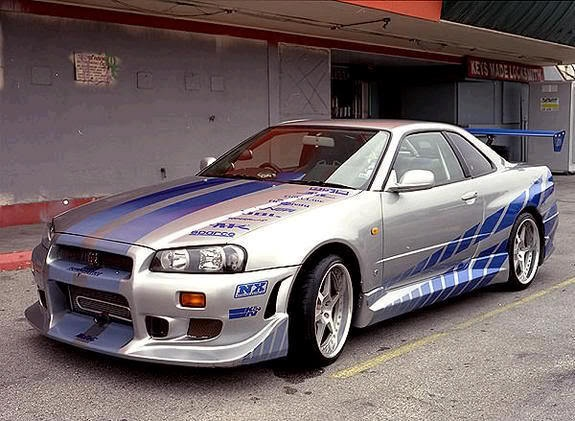

El Nissan Skyline R34 es una de las máquinas más legendarias del automovilismo japonés, famoso en la cultura del drift.

El Toyota Supra MK4, un ícono de los deportes de motor, es admirado por su velocidad y su estilo imponente.

El Mazda RX7, conocido por su motor rotativo y su agilidad, es un favorito en las pistas de drift.
El Nissan 350Z, lanzado en 2002, es un deportivo con motor V6 y tracción trasera. Es amado en el mundo del drift por su equilibrio, potencia y capacidad de modificación, lo que lo hace ideal para derrapes controlados.
El Mitsubishi Lancer Evolution es amado en el drift por su potencia, manejo ágil y tracción integral, lo que permite derrapes controlados, a pesar de no ser de tracción trasera.